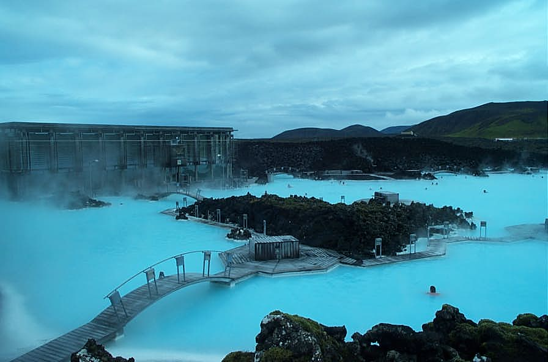

Blue Lagoon
A Blue Lagoon (Lagoa Azul) é uma famosa atração turística islandesa e um spa geotérmico localizado no sudoeste da Islândia, na Península de Reykjanes. Conhecida pelas suas águas azul-leitosas ricas em minerais como sílica e enxofre, a lagoa oferece propriedades benéficas para a pele. A atração é muito popular, sendo recomendado comprar ingressos com antecedência.
Saiba Mais